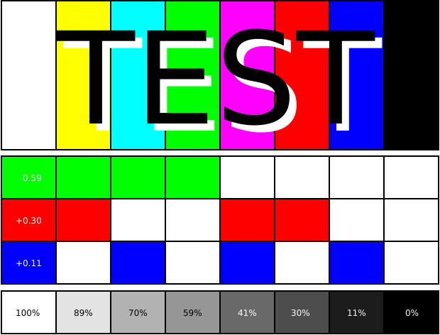

My CV
~ purpose
purpose
At the moment, this is just a work-in-progress project. It might eventually evolve into a collection of things that interest me. For now, I am focused on building the technology stack and automating the process of turning ideas into pages.
My true inspiration in terms of style and vibe comes from gwern.net. If OpenAI weren’t a thing, this project would have been much more challenging!


Just A Test